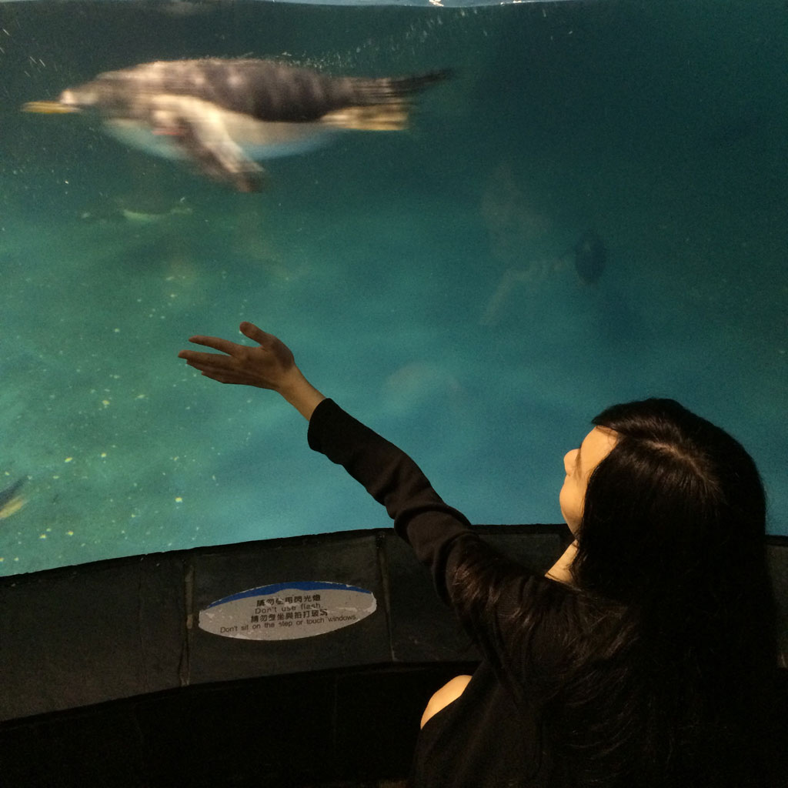

一早，搭7點的高鐵從台北出發先前往台中，再開車到墾丁，這是個讓我期待很久的旅行！
我們到了一間，一過馬路就可與海接近的民宿，也是一間，一到夜晚，躺著就可以與星空約會的民宿，我們很喜歡這樣的地方！
你看！海洋離我們有多近！
休息一下，緊接著我們要去墾丁大街吃吃喝喝，好好放鬆一下～
期待這個行程已經有三個月了，從我們決定要報名的那刻，就研究了海生館有多少夜宿區塊可以提供選擇～
其中，珊瑚王國館有三個熱門區塊～熱門順序如下
花了一個小時看了很多Blog的住宿經驗及照片，發現最喜歡的是海底隧道，就先到夜宿海生館的網頁報名，沒想到～海底隧道比想像中的搶手，
竟然只剩最後兩個名額！！很幸運的，我們就是那最後兩個名額✌
體驗夜宿前，先像個一般的觀光客，快速參觀企鵝館、海底隧道、最長的海帶池～

16:00開始，我們要進行夜宿的報到，好好體驗這兩天一夜的夜宿海生館！
昨晚，參觀了夜晚版的珊瑚區，後場的餵食區～再經歷了一晚與海洋共眠，很開心一睜開眼睛，上面的魚兒已經在跟我說早安了 ：）
一早的第一個活動，就是世界水域館的早餐餵食Show，我好喜歡護士鯊！於是～相機捕捉到這畫面～真的太喜歡牠了！！
美國作家 米莉安．畢爾德說
很明顯的，旅行不只是看風景，而是不歇止地改變我們對於生活的想法，深刻又長久。
這趟旅行，不僅僅是一個夜宿的體驗，更讓我們了解海洋面臨的問題，還有很寶貴的生態知識！
如果，你也想要體驗這樣的旅行，可以參考 更多說明 。